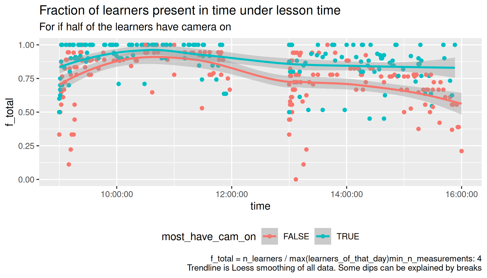

Counts¶
Goal of this experiment is to see how important camera usage is for keeping learners in an online course.
Draft paper
This paper is only a draft. Especially references to the literature are missing (although that will be easy to do).
People are encouraged to submit data: this paper intends to remain a living document.
Introduction¶
At both NBIS and NAISS we report the number of learners in our courses. The number that is used for reporting is typically the amount of learners at the start of a course.
However, during the day, learners can arrive late and/or leave early. Especially for online courses it is easy to leave early.
The amount of learners leaving early may be caused by many factors. One such factor is the amount of interactivity of a course. One could argue that an interactive course is likelier to have learners turn on their cameras, as learners need/want to communicate face-to-face with their peers and teacher.
An easily observable feature of a course is the amount of cameras that learners have on. Measuring only this will not prove a course being interactive or not. Without making any claim of showing a mechanism, this empirical study shows the progression of the amount of learners throughout the day for online courses and the effect of (the majority) the learners having their cameras on or off.
Hypothesis¶
-
H1: What is the progression of the number of learners over a day during a day-long online course?
-
H2: What is the effect of having cameras on/off on learners being present over a day during a day-long online course?
Methods¶
During a full-day online course, the number of learners was written down at multiple times, as well as the number of (those) learners that have a camera on.
To allow comparison between courses with different amount of learners, the amount of learners is normalized to a scale from 0.0 (all learners gone) to 1.0 (the maximum amount of learners at that day is present).
Use a LOESS trendline to get a reasonable running average.
Results¶
These results are for all courses that start at 9:00 and end at 16:00:

Figure 1: Number of learners during the day per course.

Figure 2: Number of learners during the day, showing the factions of learners that have a camera on.

Figure 3: Number of learners during the day separating by the majority having camera on/off.
Figure 4: The difference in the number of learners during the day between the majority of the learners having a camera on or off
Conclusions¶
The progression of the number of learners over a day is as follows: Around 80% of all learners are present at course start, after which the amount increases. At 10:30, the highest amount of learners during the day are present, after which this number decreases. See figure 2 for the exact numbers.
The effect of having cameras on/off on learners being present is as follows: there are consistently more learners remaining during the day when cameras are on. See figure 3 for the exact numbers.
This difference increases during the day, with the biggest differences at the start of the course, directly after lunch and at the end of the day. See figure 4 for the exact differences.
There is already an effect of learners showing up on time when a course is announced to require cameras, as can be shown for the 9:00-9:30 data points in figure 3.
Discussion¶
There is no investigation of the mechanism that causes learners to leave a course earlier.
In the methods, it was chosen to apply one LOESS fit as a reasonable running average. It may be argued that there should be two LOESS fits applied to the data: one before and one after lunch. However, as the reasoning of such as argument has been unconvincing to the author so far, these are not included as a main result. These figure, figures A1-A3, however, can be found in the appendix.
An unexpected finding is that more learners show up on time when a course is announced to require cameras. This could encourage both course leaders and teachers to announce the use of cameras in course announcements.
The study design can definitely be improved. In the acquired dataset, each course iteration is sometimes given by one teacher, where sometimes there are as much as four teachers during a day. In an ideal study design, a course is given by one teacher twice: once with cameras encouraged to be on, and once with cameras off. This study chose to obtain data as unobtrusively as possible, with the hope of sketching a baseline expectation for further research.
Additionally, there may be possible correlation between teachers that encourage learners to turn on their cameras and the courses they pick to teach. In an ideal study design, a course is given by multiple teachers twice. Again, the aim of this study was to sketch a baseline expectation for further research.
Additionally, the observations were done at irregular intervals, (as is shown in figure A4), which is, when the number of learners change.
Given the big amount of learners lost during a day, with already 25% of all learners having left at lunch, course coordinators could consider to ask teachers to report the number of learners after lunch too. Although this research makes no claim about any mechanism for learners leaving early, reporting this number will make teachers aware of a low or high dropout rate during their teaching. Having a low dropout rate should not be use as a perverse incentive (i.e. there should be no effects on career), but may inspire a teacher to (re)think his/her practice.
Given the big difference in learners remaining in the course, for having a camera on or off, teachers may feel more encouraged to ask their learners to turn on their cameras.
Appendix¶
A1. File overview¶
- analyse.R: the analysis
- description.csv: description of the
countsfiles - 20240419_counts.csv
- 20240422_counts.csv
- 20240423_counts.csv
- 20240424_counts.csv
- 20240425_counts.csv
- 20240426_counts.csv
- 20240515_counts.csv
- 20240524_counts.csv
- 20240822_counts.csv
- 20240823_counts.csv
- 20240827_counts.csv
- 20240828_counts.csv
- 20240829_counts.csv
- 20240830_counts.csv
- 20240925_counts.csv
- 20241022_counts.csv
- 20241024_counts.csv
- 20241111_counts.csv
- 20241118_counts.csv
- 20241119_counts.csv
- 20241120_counts.csv
- 20241121_counts.csv
- 20241122_counts.csv
- 20250210_counts.csv
- 20250304_counts.csv
- 20250307_counts.csv
- 20250319_counts.csv
- 20250324_counts.csv
A2. Data description¶
The data consists out of the files
| Filename | Description |
|---|---|
description.csv |
The course descriptions |
[date]_counts.csv |
Date the data was collected, where [date] is in YYYYMMDD format |
description.csv field |
Description |
|---|---|
date |
Date of the the course in YYYYMMDD format |
description |
Course description |
t_start |
Starting time |
t_end |
Ending time |
[date]_counts.csv field |
Description |
|---|---|
time |
Time |
n_cam_on |
Number of learners with the camera on. This excludes teacher(s) and assistants |
n_cam_off |
Number of learners with the camera on. This excludes teacher(s) and assistants |
A3. Results with a trendline per session¶

Figure A1: Number of learners during the day per course. One trendline per half-day

Figure A2: Number of learners during the day, showing the factions of learners that have a camera on. One trendline per half-day

Figure A3: Number of learners during the day separating by the majority having camera on/off. One trendline per half-day
A4. Observations in time¶
Figure A4: The number of observations during the day.